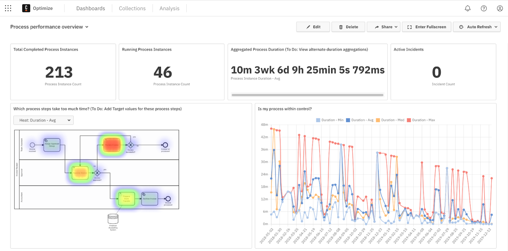
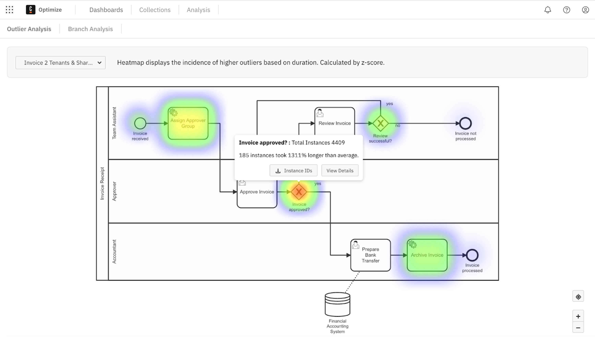
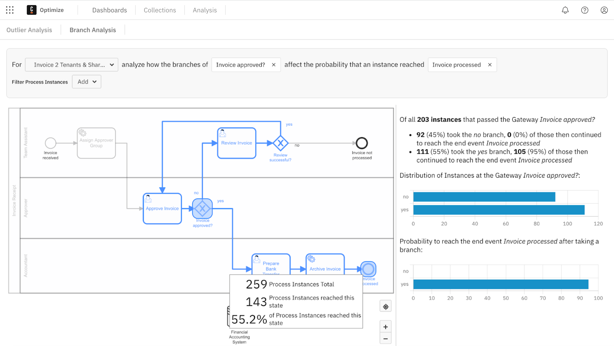

Improve processes with Optimize
Purpose
The following document provides a basic end-to-end glance into Optimize and its features for new business users.
Optimize offers business intelligence tooling for Camunda customers. By leveraging data collected during process execution, you can access reports, share process intelligence, analyze bottlenecks, and examine areas in business processes for improvement.
With Optimize, review heatmap displays for instances which took longer than average to discover long-running flow nodes. As a result, reap actionable insights and rapidly identify the constraints of your system.
For an in-depth overview of Optimize’s capabilities, visit our Optimize documentation.
Set up
Within Camunda 8, you can launch Optimize from Console — the interface where you can create clusters, and launch both Operate and Tasklist. Therefore, ensure you’ve created a Camunda 8 account before getting started with Optimize for SaaS users.
So long as you are operating with Camunda 8 1.2+ when creating a cluster, you can access Optimize. From here, Optimize requires no additional set up. You can immediately obtain process insights as Optimize already continuously collects data for analysis.
Once you’ve created a cluster, click the square-shaped icon in the top left corner of the page and select Optimize.
You can begin analyzing reports and dashboards with just two process versions. However, the more process versions you work with in Optimize, the more performance attributes and data trends you’ll be able to study. For the purposes of this guide, we’ve preconfigured several processes to demonstrate Optimize’s capabilities.
Create and analyze dashboards
Within Optimize, reports are based on a single visualization, similar to a single chart or graph. Dashboards are aggregations of these visualizations, similar to a full spreadsheet of data collections, or a combination of several comparative charts and graphs. Collections are groups of these data sets, similar to project folders for organizational purposes where we can nest a series of dashboards and/or reports within.
Once you open Optimize, you’ll first view the homepage for these collections, dashboards, and reports.
To create a collection on the Home page, select Create New > Collection. Then, you can name your collection and select which data sources and processes will be available. Note that you can select up to 10 processes at once.
From within your collection, you can again select Create New and draft reports and dashboards. Add users and additional data sources by navigating between the tabs inside the collection.
Let’s create a dashboard inside our first collection. Take the following steps:
- Return to the Home page to view a list of existing collections, dashboards, and reports. You’ll be able to view all process instances you’ve already run and retrieve additional data on these instances within the Camunda engine.
- Select the collection where you’d like to create a dashboard.
- Click Create New > New Dashboard.
- Optimize offers preconfigured dashboard templates, or you can start from a blank dashboard. In this example, we’ll select a preconfigured template by clicking the Process performance overview option. Note that you can also create dashboards with multi-process templates.
- Under Select Process, choose the process you’d like to analyze and the version.
- Click Create Dashboard.
- Name your dashboard, and add any additional existing reports or create filters. Click Save.

In the sample above, Optimize drafted a dashboard filled with reports for review. These reports include objectives like process instance counts, aggregated process duration, active incidents, and heatmaps.
Select Edit > Add a Report to incorporate additional reports you’ve already created (see create and access reports below). Click and drag the reports on the grid to arrange the dashboard to your liking.
Optimize offers collaborative capabilities, too. Click the Share tab to share your dashboard. Toggle to Enable sharing, and copy or embed the provided link. Colleagues without access to Optimize can still view your report with the shared link.
Create and access reports
To create a custom report based on a key performance indicator (KPI) you’d like to analyze, and to incorporate this report into a dashboard, follow the steps below:
- On the right side of the Collections page, select Create New > Report. Here we’ll take a look at a single process, though you can also view data from multiple processes.
- Click the text box under Select Process and select the process you’d like to analyze.
- Select the type of report you’d like to use on the right side of the Create new Report box. As with dashboards, Optimize offers preconfigured templates such as heatmaps and tables. We’ll begin with a heatmap.
- Click Create Report.
- Set up and customize your report. Begin by naming your report in the text box at the top of the page, pre-filled with New Report.
- In the gray text box to the right, confirm your data source, and select what you’d like to review from the process (in this case, we are viewing flow nodes.) You can also group by topics such as duration or start date.
- If you’d like, filter the process instance or flow nodes. For example, you can filter by duration, only viewing process instances running for more than seven days.
- Finally, you have the option to view particular sets of data from the instance, like instance count or absolute value, by selecting the gear icon to the left of your data customization. You can also choose how you’d like to visualize your data in the box beneath Visualization (i.e. bar chart, pie chart, etc.). Once you’ve made your selections, click Save.
Alerts
You don’t have to log in or view reports and dashboards to be alerted that something may need correction or further analysis in your process.
For this purpose, you can create new alerts for reports within your collections. These alerts watch reports for you among collections, and email you an alert if a set outlier occurs in your process flow.
To create an alert, take the following steps:
- Create a report with a number visualization inside a collection for a KPI you want to track.
- Inside your collection, select the Alerts tab.
- Select the type of alert you would like to receive. For example, you can receive an email notification when the backlog on your bottleneck becomes too high.
As you’re notified, you can begin to examine if the process is broken and if additional teams need to be notified.
Collections
Within your collection, you can also access the Users and Data Sources tabs to further customize your collection.
Users
Within the Users tab, review the users and user groups with access to your collection.
Select Add to search for a user or user group to add, of which may be assigned as a viewer, editor, or manager.
Data sources
Within the Data Sources tab, review and add source(s) of your data to create reports and dashboards inside the collection.
Additional analysis
Now that we’ve created data sets within the Home page, let’s shift into the Analysis tab.
Inside this tab, you’ll notice Task Analysis and Branch Analysis.
Task analysis
Inside Task Analysis, we utilize heatmap displays. Click Select Process, choose your process, and choose your version.

Within the example above, we notice increased heat (recognized as red) surrounding our invoice approved gateway. Several instances have taken significantly longer than average, so we may choose to take a closer look at these instances by downloading the instance IDs, or viewing the details for further analysis. Here, you can also find if the outliers have a shared variable.
Branch analysis
Inside the Branch Analysis tab, we can select a process and analyze how particular gateway branches impact the probability of reaching an end event.
Fill in the process field, click on a gateway, and choose your end event. In the example below, we can further analyze the likelihood of an invoice being processed once it reaches the gateway for approval:

Here, we’ve selected a process flow, gateway, and endpoint for a breakdown of all the instances that went through a particular gateway to a specific endpoint. Hover over the gateway for a breakdown of the process itself.
Additional resources and next steps
We’ve only touched the surface of Optimize. The component is full of additional ways to analyze your data for effective process improvement. We recommend taking a look at several resources to catch up on Optimize’s latest release, new features, and many usage examples: